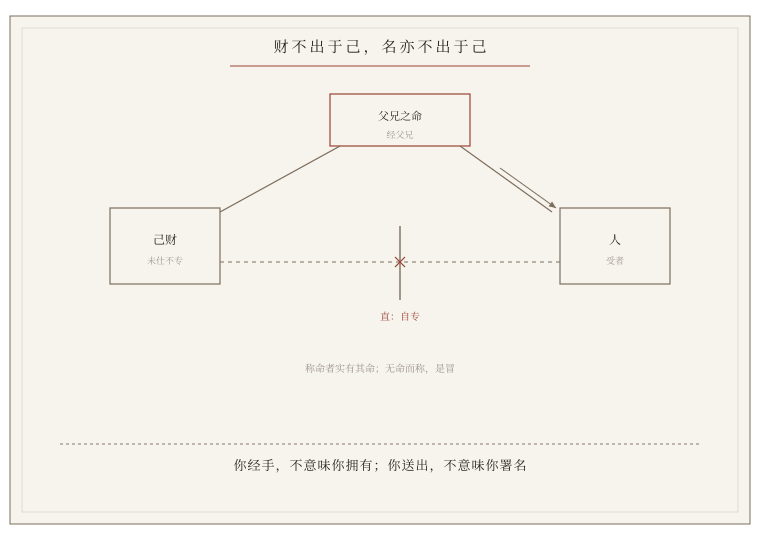

檀弓上 · 三·一百一十九 · 第 322 课
未仕者不敢税人，如税人，则以父兄之命。
说什么事：未仕之人不得擅自以家财赠人；若赠，则称父兄之命。
落在哪一层：以「名」与「财」量人情。论「经手者只是经手」。
为何编在此位：三百一十七课论「造屋」之工，三百二十课论「丧」之国耻，此课转回家常：一个人的手可以递东西，不可以递名义。
【经】未仕者不敢稅人，如稅人，則以父兄之命。
【注】不專家財也。稅謂遺於人。
【疏】此论人子之法也。「税人」谓以物遗人也；未仕未尊，则亦不敢专家财饷人也；「如税人」，谓已仕者也，虽得遗人，亦当必称父兄以将遗之。
未仕 未出仕。未受命于君，未有位。
税 注「税谓遗于人」。遗，音位，赠送。非赋税之税。
专家财 专擅处置家之财物。
如 若。一说「如」为「若」，属未仕者；注疏以属已仕者。
父兄之命 父兄的吩咐。称命，谓实有其命。
没有出仕的人，不敢擅自把家中财物赠人；若真要赠，就称是父兄的意思。
一句话，两层。前一层禁：未仕者不得专财。后一层放：「如税人，则以父兄之命」——可以赠，但要以父兄的名义。
所以此节不是不许赠，是规定「以谁的名义赠」。礼在这里把「钱是谁的」与「名是谁的」分作两件事。
第一层 「税」是遗，不是赋 注一句定字：「税谓遗于人也。」此「税」借为「遗」，非租税之税。
一字之辨，全章之义随之：若作赋税解，则此章成财政之条；作赠遗解，则是人子之节。读礼先辨字，字误则义全非。
第二层 未仕则未尊 疏「未仕未尊，则亦不敢专家财饷人也」。未仕者无位，无位则无处置家财之权。
礼的权，跟着位走。无位而用权，即使出于好意，也是「专」。这是礼最不容的一种过失：不是坏心，是越位。
第三层 「如税人」的两读 一读「如」为「若」，谓未仕者若欲赠，则称父兄之命。一读「如税人」指已仕者，谓虽已仕，仍当称父兄之命。
注疏取后读：疏明言「谓已仕者也，虽得遗人，亦当必称父兄以将遗之」。两读之别，在于此句是「补未仕之例外」，还是「加已仕之限制」。
后读更严：已仕者也不能自专其名。礼在这里不留余地。
第四层 财与名，两本账 钱是家里的，名是父兄的。你经手，不意味你拥有；你送出，不意味你署名。
把这两本账分开，是礼对「人情」的一种保护：赠者不致僭，受者不致误认恩主。
与今日何干 今人子女用父母的钱做人情，多不告；员工用公司的资源送客户，多不报。此节给的线最简单：财不出于己，名亦不出于己。经手者只是经手。
| 左 | 右 |
|---|---|
| 未仕 | 未尊，不敢专 |
| 税 | 遗于人，非赋税 |
| 不敢税人 | 不专家财 |
| 如税人 | 若欲赠 |
| 父兄之命 | 名之所出 |
| 已仕者亦当称命 | 疏说 |
| 财与名 | 两本账 |
画一处内室，视点平视。左侧案上置一只箧，箧盖半开，内有布帛；右侧门外一人伸手欲接，只画手与袖。案与门外之间，地上有一道门槛。门内偏后另有一人（只画衣与背影，年长），立于槛侧。不画人面、不写文字。赭色只用在箧上一道绊带。
